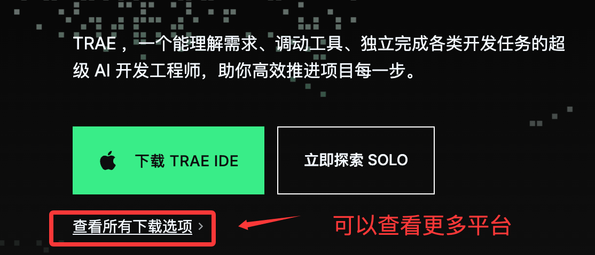
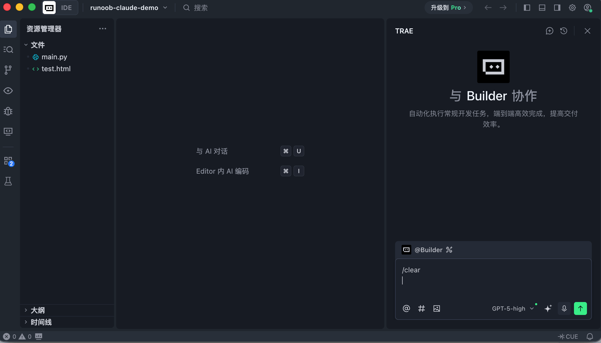
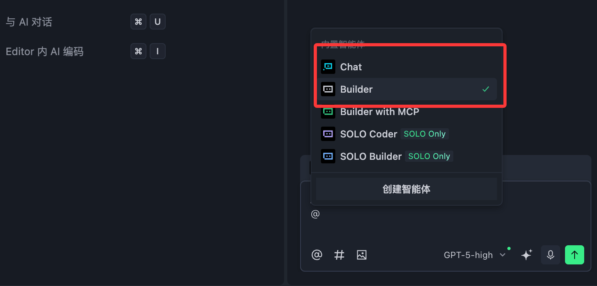
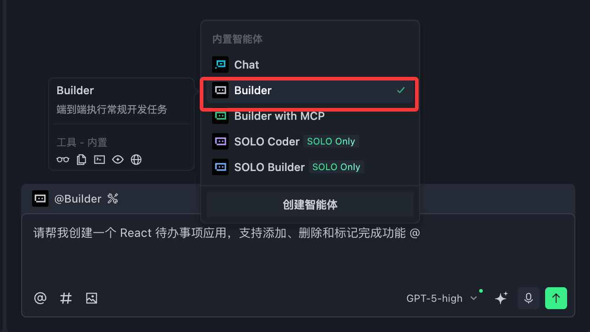
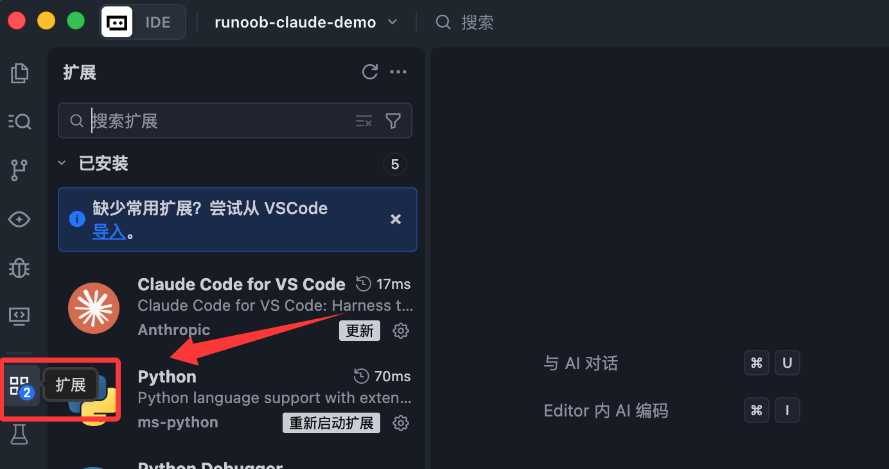
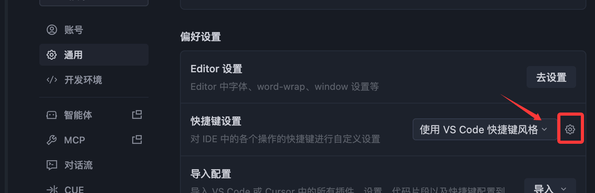
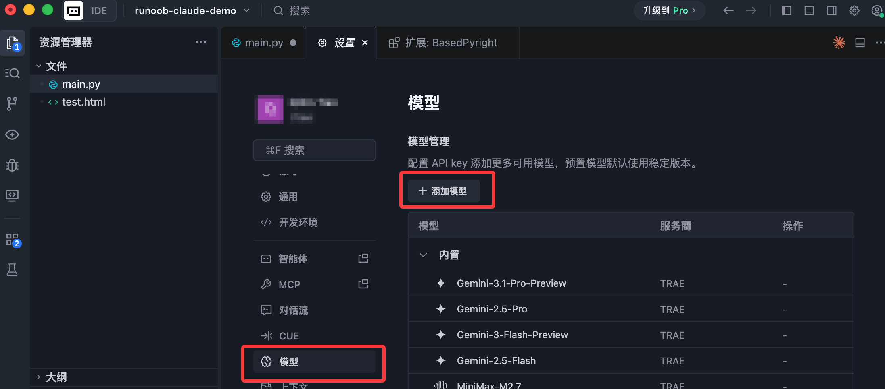

TRAE チュートリアル
Trae（読み方: /treɪ/）は、ByteDance がリリースした AI ネイティブ統合開発環境（IDE）です。Claude や GPT-4o などの大規模モデルを深く統合し、スマートQ&A、コード補完、AI 自動プログラミング機能を提供します。
Trae は VS Code カーネルをベースに開発されており、インターフェースは親しみやすく、使い方はVS Codeほぼ同じです。
Trae の主な特徴は以下のとおりです：
- 完全中国語インターフェース、中国語化プラグインのインストールは不要で、すぐに使えます。
- AI アシスタント内蔵、Chat（Q&A）と Builder（プロジェクト構築）の2つのモードをサポート
- VS Code エコシステムと互換性あり、プラグイン、ショートカットキー、設定ファイルをワンクリックでインポート可能
- マルチプラットフォーム対応：Windows と macOS。Linux 版は予約可能
- 完全無料、有料サブスクリプションなしで AI 機能を利用可能
Trae のインストール
1. インストールパッケージのダウンロード
公式サイトは自動的にあなたの OS を認識し、対応するバージョンを推奨します。手動で選択することもできます：
| オペレーティングシステム | ダウンロードバージョン |
|---|---|
| Windows | .exeインストールパッケージ |
| macOS（Intel） | .dmgインストールパッケージ |
| macOS（Apple Silicon） | .dmgARM 版 |

2. インストール手順
ダウンロードが完了したら、インストールパッケージをダブルクリックし、指示に従ってインストールを完了します。プロセス全体は通常のソフトウェアのインストールと同じで、約1〜2分で完了します。
3. 初期設定
Trae を初めて起動すると、初期設定ウィザードが表示されます：
ステップ1：テーマの選択
選択肢は「ダーク」、「ライト」、「ディープブルー」です。好みに応じて選択してください。後で設定からいつでも変更できます。
ステップ2：表示言語の選択
「簡体字中国語」または「English」を選択できます。中国語の開発者は簡体字中国語を選択すれば、インターフェースが完全にローカライズ表示されます。

ステップ3：既存設定の移行（任意）
以前に VS Code や Cursor を使用していた場合、「VS Code からインポート」または「Cursor からインポート」をクリックすると、Trae が自動的に同期します：
- インストール済みのプラグイン
- IDE 設定と環境設定
- ショートカットキーの割り当て

これにより、従来のツールから Trae へほぼシームレスに移行でき、学習コストは非常に低くなります。
ステップ4：コマンドラインツールのインストール（推奨）
「インストールtraeコマンド」をクリックして認証を完了すると、ターミナルで以下のコマンドを使用できます：
# 快速唤起 Trae trae # 在 Trae 中打开指定项目 trae my-react-app

ステップ5：アカウントにログイン
携帯電話番号または稀土掘金（Juejin）アカウントでログインします。ログイン完了後、Trae で AI サービスを利用できます。

インターフェースレイアウト
Trae のインターフェースは VS Code と非常に似ており、主に以下の領域に分かれています：
┌─────────────────────────────────────────────┐ │ 菜单栏（文件 / 编辑 / 视图 / 帮助…） │ ├──────┬──────────────────────┬───────────────┤ │ │ │ │ │ 侧边栏│ 代码编辑区 │ AI 助手面板 │ │ │ │ │ │（文件 │ │（Chat / Builder│ │ 资源 │ │ 对话界面） │ │ 管理器│ │ │ │ 等） │ │ │ ├──────┴──────────────────────┴───────────────┤ │ 终端（底部面板） │ └─────────────────────────────────────────────┘

- サイドバー：ファイルエクスプローラー、検索、バージョン管理、プラグインマーケットなど
- コードエディタ領域：主要なコード記述領域。構文ハイライト、複数ファイルタブをサポート
- AI アシスタントパネル：右側の AI 対話領域。Chat と Builder の2つのモードをサポート
- ターミナルパネル：下部の統合ターミナル。コマンドを直接実行可能
プロジェクトを開く・管理する
既存プロジェクトを開く
以下の方法があります：
- メニューバーで「ファイル」→「フォルダーを開く」を選択し、ローカルプロジェクトディレクトリを選択
- ターミナルで実行
trae プロジェクトパス直接開く - ウェルカムページから「最近開いたプロジェクト」を選択
ターミナルから Trae を起動するには以下のコマンドを使用します：
trae
Trae で現在のディレクトリを開くコマンド：
trae .
ディレクトリパスを指定するには以下のコマンドを使用します：
trae ~/runoob-test # 打开指定目录的项目
Git リポジトリをクローン
ウェルカムページで「Git リポジトリをクローン」をクリックし、リポジトリ URL を入力すると、リモートプロジェクトをローカルに取得して自動的に開きます。
ファイルとプロジェクトの新規作成
- ファイルエクスプローラーのフォルダーを右クリック →「新しいファイル」を選択。Trae はファイル拡張子に基づいてタイプを自動認識します。
- メニューバー「ファイル」→「新しいプロジェクト」で、空白プロジェクトを選択するか、Builder モードで AI を使って生成できます。
AI アシスタントを使用する
これは Trae の中核機能であり、2つのモードを提供します：

Chat モード（スマートQ&A）
Chat モードは、開発中にいつでも質問できる、現在のコードを理解する「スマートパートナー」です。
一般的な使い方：
- 特定のコードの働きを説明する
- バグを特定し、修正案を提示する
- 特定の API の使い方を尋ねる
- AI にコードロジックの最適化を依頼する
コンテキストの使用方法：
AI との対話で、コード、ファイル、フォルダーをコンテキストとして指定すると、AI の回答がより正確になります。例えば、Chat 入力ボックスで@ファイル名を使用して特定のファイルを参照します。
Builder モード（プロジェクト構築）
Builder モードは、ゼロからプロジェクトを構築するのに適しています。希望するアプリを自然言語で説明するだけで、AI が自動的にツールを呼び出し、要件を分析し、ファイルを生成してコマンドを実行します。
使用例：
请帮我创建一个 React 待办事项应用，支持添加、删除和标记完成功能

Builder モードは自動的に以下を行います：
- プロジェクトのディレクトリ構造を作成
- 必要なすべてのコードファイルを生成
- 依存パッケージをインストール
- プロジェクトを実行してプレビュー
注意（Windows ユーザー）：Builder モードを使用するには、PowerShell 6 以降を構成する必要があります。「設定」→「ターミナル設定ファイル」で、
\PowerShell\{版本号}\という文字を含む設定を選択してください。
AI が生成したコード変更を処理する
AI がコードを生成した後、受け入れるか拒否するかを選択できます：
| 操作 | macOS ショートカットキー | Windows ショートカットキー |
|---|---|---|
| 現在のファイルのすべての変更を受け入れる | Command + Enter | Ctrl + Enter |
| 現在のファイルのすべての変更を拒否する | Command + Backspace | Ctrl + Backspace |
| すべての変更を一括受け入れ | 入力ボックス上部の「すべて受け入れる」ボタンをクリック | 左と同じ |
| すべての変更を一括拒否 | 入力ボックス上部の「すべて拒否」ボタンをクリック | 左と同じ |
インラインチャット（Inline Chat）
サイドバーの AI パネルに加えて、エディタ内で直接 AI を呼び出すこともできます：
- ショートカットキー：
Command + I（macOS）/Ctrl + I（Windows） - コードを選択してショートカットキーを押すと、選択した内容について直接質問したり、修正を要求したりできます。
- コードにエラーが発生した場合も、エラー通知の横の「AI 修正」ボタンをクリックすると、AI が自動的に分析して修正します。
コード補完
Trae には AI コード補完機能が内蔵されており、コードを書く際にリアルタイムで提案を表示します。追加設定は不要で、プロジェクトを開くだけで利用できます：
- AI が補完提案を表示したら、
Tabキーで受け入れ - 按
Escキーで提案を無視 - 補完範囲は、単一行のコード、関数全体、さらにはファイルをまたぐロジックまでカバーします。

プラグイン管理
Trae は VS Code のプラグインエコシステムと互換性があります。プラグインのインストール方法：
- 左側のサイドバーの「プラグイン」アイコンをクリック（または
Ctrl+Shift+X） - 検索ボックスにプラグイン名を入力し、「インストール」をクリックするだけです。
- VS Code から設定をインポート済みの場合、既存のプラグインは自動的に同期されるため、再インストールは不要です。

バージョン管理
Trae には Git 統合が内蔵されており、サイドバーの「ソースコード管理」パネルで視覚的なバージョン管理操作を提供します：
- ファイル変更の確認、ファイルのステージング
- コードのコミット、リモートリポジトリへのプッシュ/プル
- コミット履歴とDiff比較の確認
コマンドラインに慣れている開発者向けに、下部の統合ターミナルでもGitコマンドを直接実行できます。
パーソナライズ設定
テーマと言語の変更
「設定」→「一般」→「環境設定」で、インターフェースのテーマと表示言語を変更できます。

ショートカットキーのカスタマイズ
「設定」→「一般」→「環境設定」→「ショートカットキー設定」で、ショートカットキーのバインドを追加、変更、削除できます。

AI関連設定
「設定」→「モデル」で、使用するモデルなどのオプションを設定できます。

その他の拡張機能
クリックしてノートを共有
ノートは本記事の内容を拡張したものである必要があります！
記事の投稿はこちらをクリック
登録招待コードの取得方法
ノートを共有する前にログインが必要です！
登録招待コードの取得方法